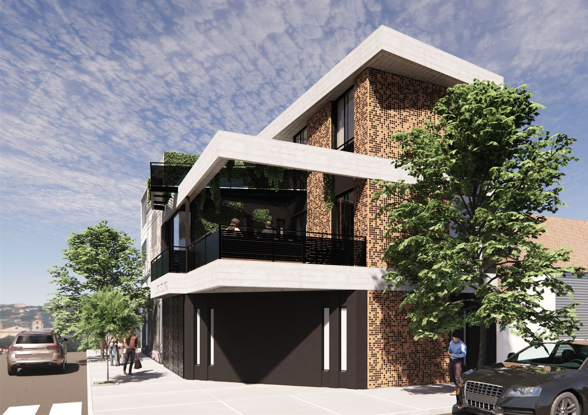
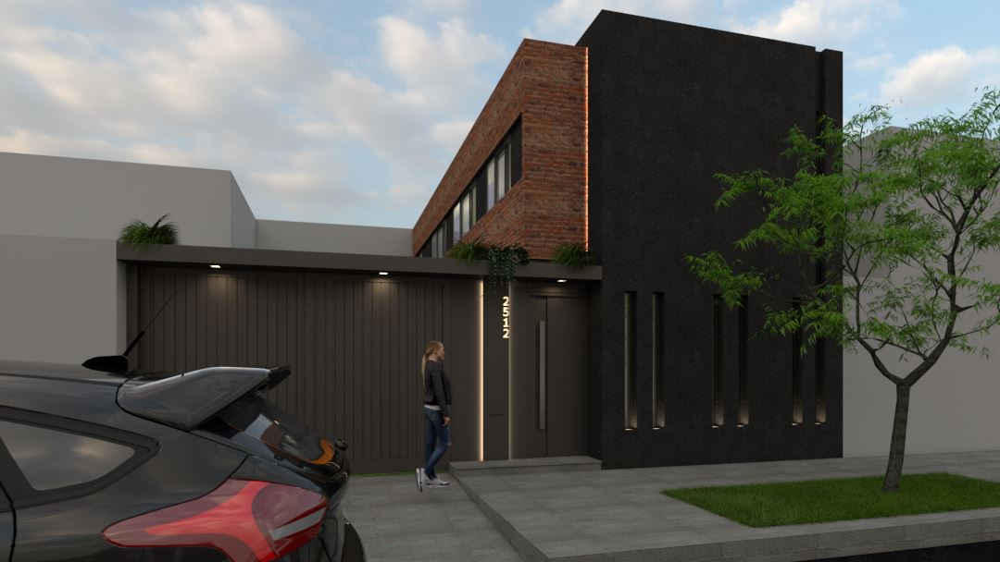
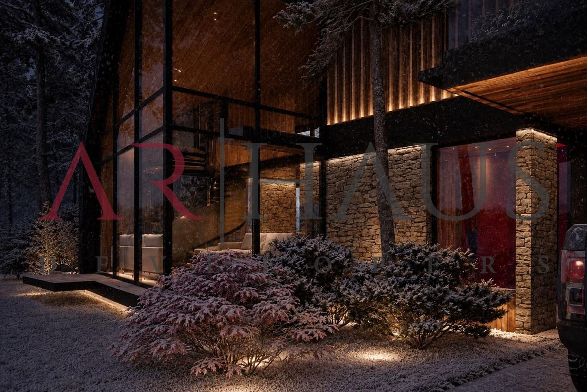
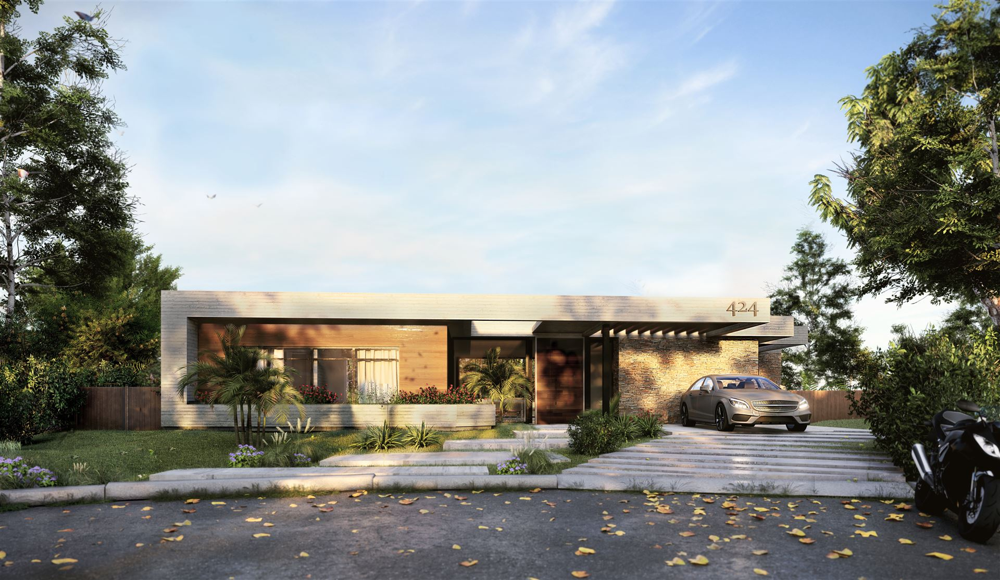
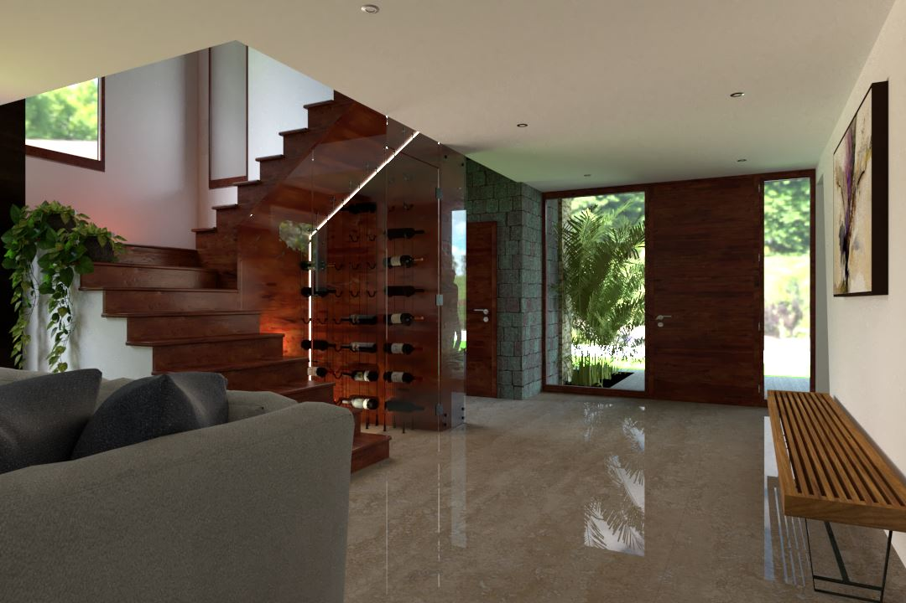
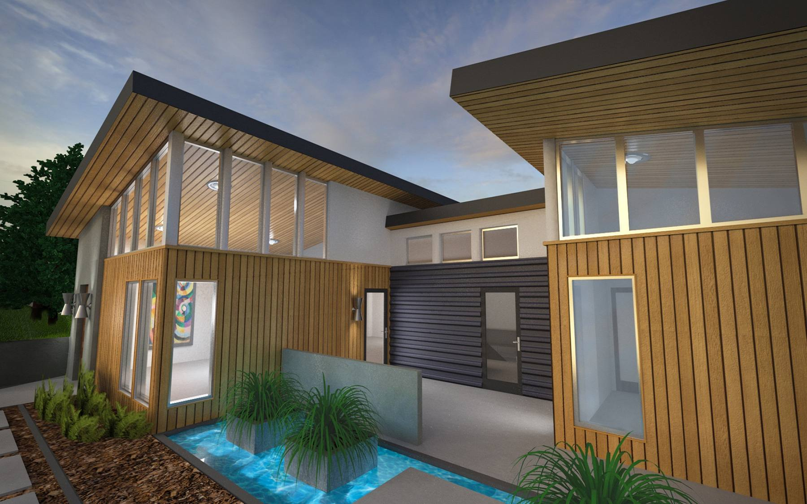

Villa Urquiza Casa La Pampa 4510 En obra
San Isidro Azcuénaga · Casa I Obra finalizada
San Martín de los Andes Casa Huepil Proyecto
Pilar del Este San Ramiro · Casas 424 y 425 Proyecto
Escobar San Benito · Interiorismo Proyecto
Nordelta El Golf Ejemplo